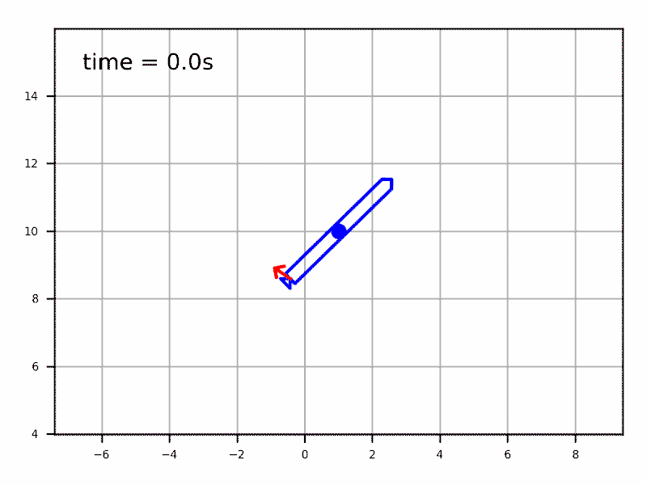
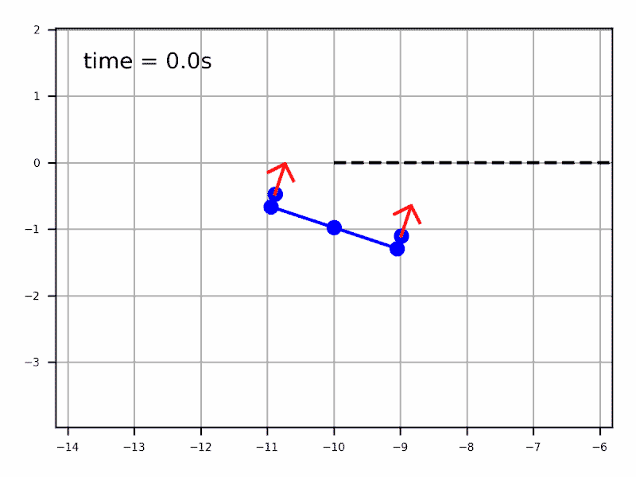
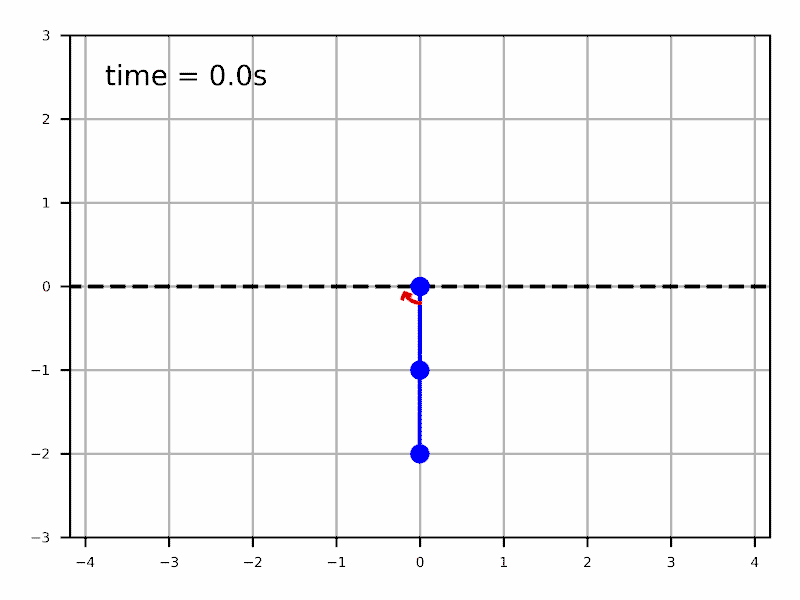
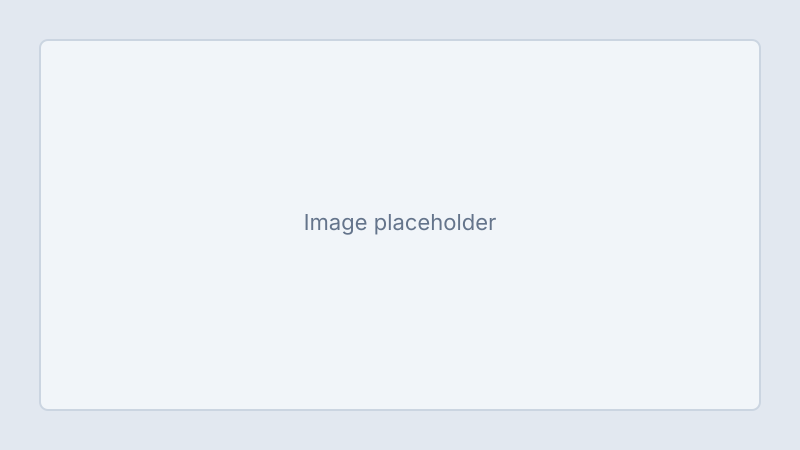

Préface
Accroche et objectifs narrative
Paragraphe d’introduction : public cible, prérequis, et pourquoi le cours existe. Utiliser mots-clés pour les idées centrales.
« Citation courte ou slogan du cours. »
Variante (GRO860) : liste à puces « Pourquoi ce cours? » + citation en <h5> italique borduré
+ lien vers la fiche UdeS du sigle.
Aperçu visuel



Introduction
Sous-titre optionnel
Développer le fil conducteur : modèles, algorithmes, évaluations. Exemple d’expression math inline : état $x_k$, entrée $u_k$ (si MathJax est chargé ci-dessus).
Second paragraphe : lien avec d’autres cours ou programmes.

Cibles de formation
À la fin de ce cours vous serez en mesure de :
- Formuler un objectif d’apprentissage mesurable (exemple).
- Appliquer une méthode ou un outil du cours à un problème type (exemple).
- Communiquer les résultats par écrit ou en présentation (exemple).
Déroulement du cours et Évaluation
Déroulement
Cours magistral : durée et fréquence (ex. 3 h / semaine).
Laboratoires / TP : durée, outils (Python, ROS, etc.).
Étude personnelle : lectures, vidéos, forums.
Évaluation
Devoirs : nombre, pondération, politique de retard.
Examen : mi-session / final, documents permis.
Projet : individuel ou équipe, livrables et oral.
Logistique (bloc optionnel)
Guide du cours
Cette section présente les liens vers le matériel et les livrables semaine par semaine.
| Semaine | Sujet & Matériel | Exercices | Livrables |
|---|---|---|---|
11 jan. |
IntroductionThèmes de la séance : définitions, exemples motivants. |
— | Devoir #0 (format) |
28 jan. |
Chapitre suivant |
|
Laboratoire #1 — consignes dans le dépôt |
3 bis15 jan. |
Séance spécialeExemple d’intitulé de semaine non numérique simple. |
— | — |